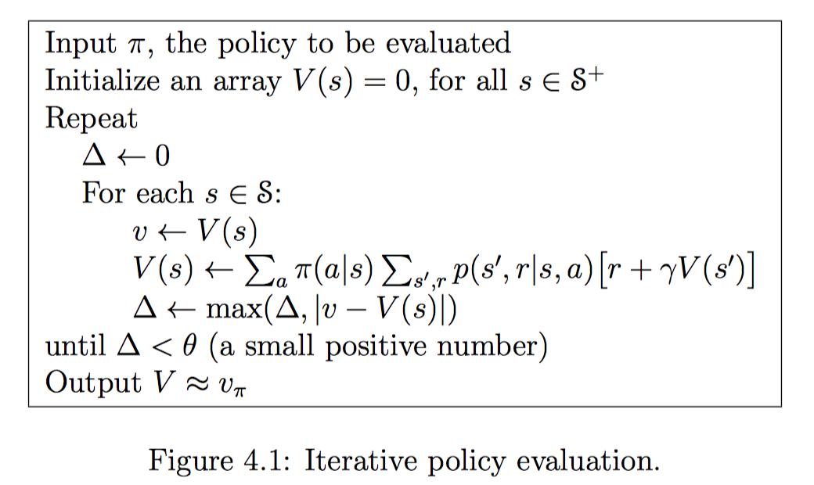
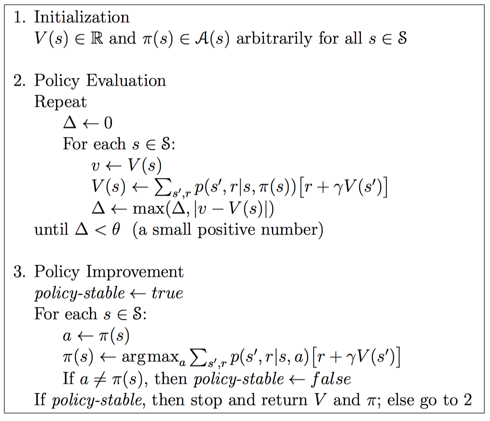
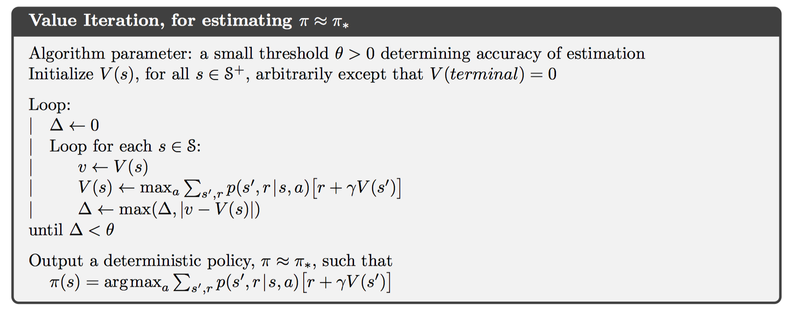
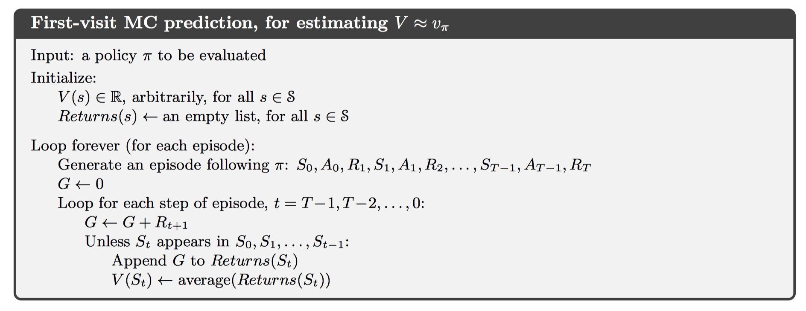
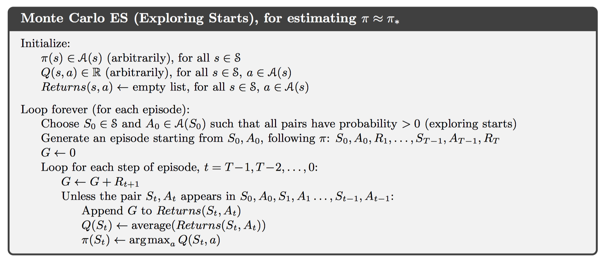
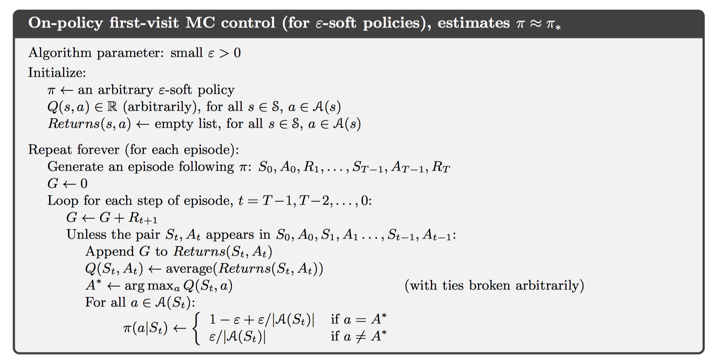
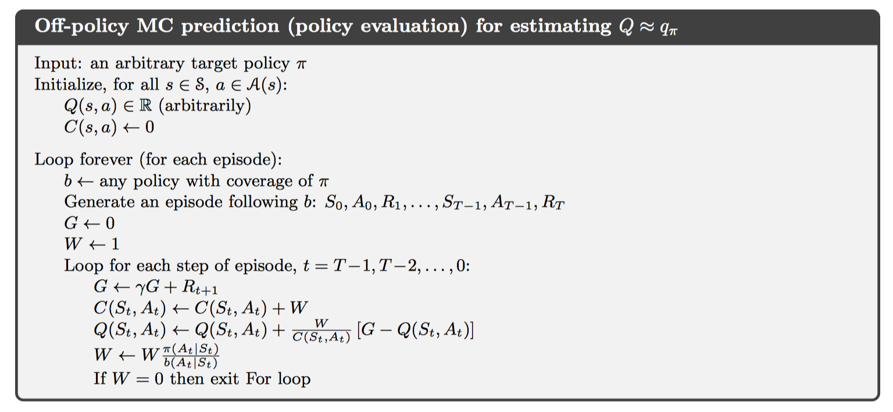
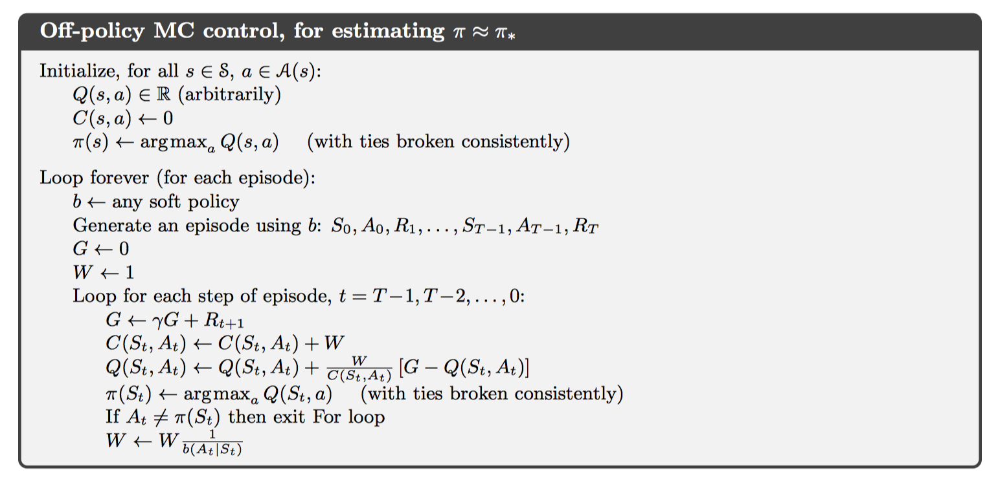

Reinforcement Learning: An Introduction 学习笔记（2）
[TOC]
基于策略的迭代算法，实际上就是穷举遍历的过程。在P93的图中，我可以预见，在第十六步之后，整个图的值函数将不会再发生巨大的变化，而是趋于一个稳定的状态。
这里需要注意的是，我们计算的对象，是一个确定策略的情景。也只有在确定策略的情景下，我们才可以明确出value function。

$$
v_{\pi’}(s) \ge v_{\pi}(s)
$$
上式描述了，当新策略的每一步要么与原策略的收益相同，要么优于原策略，那么称当前的策略更优。于是我们可以使用贪心策略来启发式地从一个基础策略出发，对原有策略不断进行更新。
$$
\begin{equation}
\begin{aligned}
\pi’(s) &= \mathop{\arg\max}{a}q\pi(s,a) \
&= \mathop{\arg\max}a\mathbb{E}\big[R{t+1} + \gamma v_\pi(S_{t+1})\ | \ S_t=s, A_t=a \big]
\end{aligned}
\end{equation}
$$
如此一来可以保证，当前策略一定优于原有策略。只是，针对某些问题，局部最优解不一定引向全局最优解。
基于以上两点讨论，我们可以得到一个改进策略的基本方法
$$
\pi_0 \overset{\text{E}}{\rightarrow} v_{\pi_0} \overset{\text{I}}{\rightarrow} \pi_1 \overset{\text{E}}{\rightarrow} v_{\pi_1} \overset{\text{I}}{\rightarrow} \pi_2 \overset{\text{E}}{\rightarrow} \dots \overset{\text{I}}{\rightarrow} \pi_ \overset{\text{E}}{\rightarrow} v_{}
$$
这里E表示evaluation，I表示Improvement。通过贪心策略我们可以保证，新生成的策略一定比原有策略更优。

由于我们使用的MDP是有限状态的，这也就表示状态的个数是有限的，因此在有限迭代之后一定可以找到一个最优值。不过该最优值可能是局部最优解。更加形式化的证明可以参见这里。

上图展示了value iteration的工作方式。类比于上面论述的方法，这里的特点是，只有一次policy improvement，因此收敛得更快。
上图展示了两者的区别。很明显，value iteration丢失了某些信息，以达到更快的迭代速度。
类比到梯度下降法中的话，可以认为policy是batch gradient descent，而后者这是stochastic gradient descent。
这篇博客很好地介绍了value iteration的工作方式，并且对gamble’s problem的最终结果进行了思考，得到了一个较好的解释：教材中的结果是不可复现的，具体的策略依赖于最终目标的数学特征。如1024由于是一个2的幂次，所以将会出现在2的幂次上面赌徒应该投入更多的筹码。
蒙特卡洛方法，是一种可以通过学习来不断估计值函数，并且发现最优策略的方法。不像DP方法需要知道环境中的全部信息，蒙特卡洛方法只需要一些经验(experience) — 也就是通过与环境进行交互得到的必要信息。从这些信息中进行学习以达到最优行为。尽管蒙特卡洛方法也是需要建模的，但是这个模型只需要简单的转移即可，并不需要像DP那样的每一个状态的概率分布都必须建立。
这里只讨论处理episodic tasks的蒙特卡洛方法。
MC被广泛地应用于含有随机的情景下。MC与多臂赌博机问题有很多相似之处 – 都是通过采样、取均值的方法对state-action二元组进行估计；主要的不同是这里存在着多种状态，每一个状态都单独是一个多臂赌博机问题，并且各个状态之间是相互关联的。也就是说，在同一阶段，当前状态采取的行为将会影响下一个状态采取的行为获得的收益。但是相对于DP方法，各个状态之间又是相互独立的，原因是在DP中估计值函数需要一个状态之后的所有状态，而蒙特卡洛方法只需要一个状态而已，也就是采样到的那一个收益。
对于值函数与策略的迭代，MC同样使用了GPI(Generalized Policy Iteration)。
相对于DP，MC方法的优点总结如下：
在多臂赌博机问题中，预测state-action函数时，最简单的方法就是累积求和取平均，如此一来在试验次数足够大的情况下就可以收敛到真值。这是MC方法的核心思维。
在模型已知的情况下，通过收集每一个episode中经过某个状态的信息，我们就可以估计出该状态的值函数。估计方法有两种，一种称为first-visit MC method，表示只使用每一个episode中第一次访问该状态得到的信息；另一种方法称为every-visit MC method，表示使用每一次访问该状态得到的信息。这里只讨论第一种方法。

这个算法流程中有两点需要注意的地方：
pre[n] - pre[i]，这就是逆序求和的原因所在。unless在这里判断的，是要看该状态在本阶段是否已经计算过。因此本算法是first-visit MC method。当不存在模型的时候，就没有办法定义状态带来的收益了。因此想要估计的函数发生了改变，此时我们关心的是行为收益；当每一个状态后续的各种行为收益被估算出来之后，就可以很容易地进行策略更新。
此时我们估计的值就变成了state-action。同样的，估计方式有两个，分别是first-visit MC method以及every-visit MC method。含义与上述的基本一致。
这样的算法可能出现一些问题：
第一个问题实际上就是多臂赌博机问题中遇到的EE问题；而第二个问题在DP中也遇到了，这个问题存在于所有算法之中。
初始化时，随机一点，允许探索行为。

缺点是不切实际，相当麻烦。
MC方法中有两类方法可以良好地解决第一点问题，分别是on-policy, off-policy。这里首先介绍前者。
On-policy方法，一般来说都具有soft的特性，也就是$\pi(a|s)>0$。但是在策略优化步骤中将会逐渐得演变为确定性策略。下面给出算法实现：

对于非贪心策略的可能性赋值那里很自然：每一个都有平等的机会被选中。但是对于贪心策略下的行为，这里将其被选中的策略规定为$1 - \epsilon + \epsilon/|A(S_t)|$。这是把$\epsilon$-soft思想放入算法内部的实现方式，具体的原因见下面的推导：
$$
\begin{equation}
\begin{aligned}
q_pi(s, \pi’(s)) &= \sum_a \pi’(a|s)q_\pi(s,a) \
&=\frac{\epsilon}{|A(s)|}\sum_aq_\pi(s,a) + (1-\epsilon)\max_aq_\pi(s,a) \
&\ge \frac{\epsilon}{|A(s)|}\sum_aq_\pi(s,a)+(1-\epsilon)\sum_a\frac{\pi(a|s) - \frac{\epsilon}{|A(s)|}}{1-\epsilon}q_\pi(s,a) \
&= \frac{\epsilon}{|A(s)|}\sum_aq_\pi(s,a)-\frac{\epsilon}{|A(s)|}\sum_aq_\pi(s,a) + \sum_a\pi(a|s)q_\pi(s,a) \
&= v_\pi(s)
\end{aligned}
\end{equation}
$$
当然还有一种很自然的实现方式，那就是将探索的分类放到$\pi$函数外面。首先选取一个随机数，与$\epsilon$进行比较，大于该随机数时选择贪心策略，否则从非贪心策略中随机选择一个行为。这两种实现方法是等价的。
在上面讨论的算法中，可以发现这里面存在着一个矛盾：一方面想要根据值函数来确定出策略，一方面想要进行探索以发现更好的值函数。因此On-Policy最终的策略包含了一定的探索成分，这使得其不是最优策略。一个显而易见的解决方法是维护两个策略，一个表示最终的目标策略(target policy)，一个用于产生行为的行为策略(behavior policy)。在这里，发生了数据与最终策略的分离，因此称为off-policy learning。
具体的做法是采用所谓的importance-sampling，也就是利用从另一个分布采样得到的值，来估计这一个分布中的期望值。给定起始状态$S_t$，以及后续状态直到$S_T$，在策略$\pi$下产生这一串决策的概率是：
$$
\begin{equation}
\begin{aligned}
\text{Pr}{&A_t, S_{t+1},,A_{t+1},\dots,S_T|S_t, A_{t:T-1~\sim \pi} }\
&=\pi(A_t|S_t)p(S_{t+1}|S_t, A_t)\pi(A_{t+1}|S_{t+1})\cdots p(S_T|S_{T-1},A_{T-1}) \
&= \prod_{k=t}^{T-1}\pi(A_k|S_k)p(S_{k+1}|S_k,A_k)
\end{aligned}
\end{equation}
$$
在上式的基础上，产生importance-sampling ratio：
$$
\rho_{t:T-1} = \frac{\prod_{k=t}^{T-1}\pi(A_k|S_k)p(S_{k+1}|S_k,A_k)}{\prod_{k=t}^{T-1}b(A_k|S_k)p(S_{k+1}|S_k,A_k)} = \prod_{k=t}^{T-1}\frac{\pi(A_k|S_k)}{b(A_k|S_k)}
$$
可以观察到这是一个与模型无关，只与策略相关的方法。此时我们就可以通过策略$b$的观测值来得到策略$\pi$的期望值：
$$
\mathbb{E}[\rho_{t:T-1}G_t|S_t] = v_\pi(S_t)
$$
在具体实现的时候，我们有两种方式可以选择：
ordinary importance sampling
这种方式对目标策略的估计公式为$V(s) = \displaystyle \frac{\sum_{t\in\mathcal{J}(s)}\rho_{t:T(t)-1}G_t}{|\mathcal{J}(s)|}$
表示对于每一次采样结果都平等对待。考虑当只有一次采样结果并且与实际值偏差较大的情况，那么可能会出现偏差非常大的结果。因此这是high variance的算法。
weighted importance sampling
这种方式对目标策略的估计公式为$V(s) = \displaystyle \frac{\sum_{t\in\mathcal{J}(s)}\rho_{t:T(t)-1}G_t}{\sum_{t\in\mathcal{J}(s)}\rho_{t:T(t)-1}} $
如此一来，每一个采样结果将会根据importance-sampling ratio的值进行区别对待。因此不会再出现high variance的情况。
下面介绍两种使用weighted importance-sampling 方法实现的MC算法
这种方法基于增量、加权取样、指数加权平均技术实现，算法主体见下图：

实际上当目标策略与行为策略高度重合时，也就是$W = 1$的时候，这个同时也是on-policy算法。
考虑到目标策略与数据并不进行交互，因此可以随时对目标策略进行更新。并且规定目标策略为确定性策略，也就是$\pi(A_t|S_t) = 1$，因此可以注意到对$W$进行更新时，分子为1。
